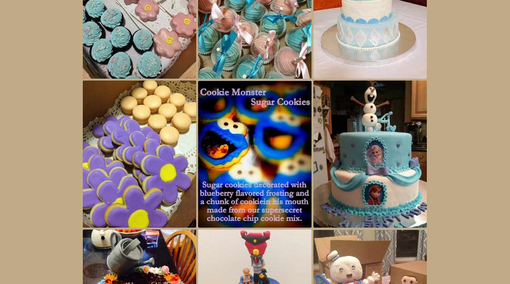

My Portfolio
1. The Unofficial Wheaton Equestrian Website
I have created and maintained a website for the Wheaton College Equestrian Team with the current team roster, competition schedule, competition results, news about the team, and season photos.
2. Searching for Technology on Campus
I have been working on an ongoing project to create a page on the Wheaton College website that enables visiters to find software on campus. Visiters are able to search by location, type of software, OS type, or by software name.
3. Cupcakes Cupcakes Cupcakes!
{kind=link}
Working with a team of two other classmates, I have created a website for a teammate's wife's baking company. We used a combination of html, css, and svg and used two frameworks: Bootstrap and Semantic UI. Bootstrap was used for the structuring each page and for building the nav bar, where Semantic UI was implemented for sleek appearences of photos and the form on the 'contact us' page. A 'reveal' animation was implemented to the pictures so when a visitor hovered over one of the images, a description of the item popped up. To the right is a screenshot of the photos page as I designed it, including the revealing of one of the photo's descriptions. Click the image for full size.
I cannot speak to the appearence of the website from here on out, because it has been handed over to the company to continue use.4. Interactive GATRA Route 140 Map
I have created an interactive version of the Gatra Route 140 Map that has markers on it for many different restaurants, gas stations, car repair shops, transportation places, and the local town office. Each node also includes a link to the location's website, given they have one.